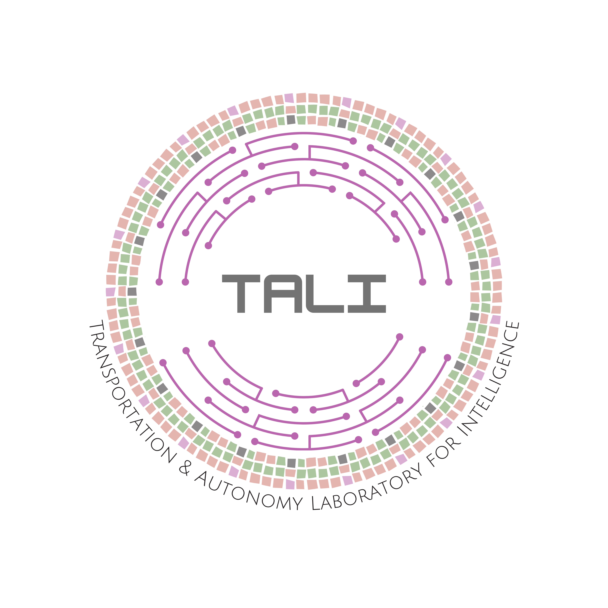

Transportation &
Autonomy
Laboratory for Intelligence
We advance intelligence in transportation systems, specializing in operations analysis and applied artificial intelligence to solve core challenges in autonomy, complex agent behaviors, and real-world integration.

Research
All ProjectsDomain & Physics-Guided Control for Autonomous Vehicles
Bridging AV control algorithms with traffic flow theory using physics-based response functions, enabling systemwide stability and safety optimization, not just individual vehicle performance.
Consensus-driven AI Agents for Mixed Autonomy Traffic
Modern traffic systems are shaped by dynamic interactions between diverse agents. Agents are expected to uphold safety, maintain quality interactions, and contribute to an efficient system. These goals are often at odds. Navigating this tradeoff between goals is not just a matter of design, but rather a broader challenge of achieving consensus.
Knowledge Sharing and Personalization Across Agents
The curse of variability stands as a critical barrier in the development and deployment of Automated Vehicles (AVs) in the open world. Variability in the open world stems from the innate dynamic, stochastic, and unpredictable nature of the transportation system.
Learning under Agent Heterogeneity
Traffic flow heterogeneity, stemming from diverse behaviors of its agents, presents a fundamental challenge in developing accurate predictive and prescriptive models that are at the heart of understanding traffic.
Modern Traffic Flow Theory
Traffic flow systems are increasingly complex, dynamic, and changing. We develop modern traffic flow theory that accounts for complex interactions and dynamics between agents, and provide theoretical foundations for how they shape traffic performance and stability.
Urban Mobility Patterns Under Crisis
The growing frequency and severity of natural disasters present profound challenges for societies worldwide, threatening lives, disrupting economies, and straining infrastructure.
Adoption Patterns of Emerging Modes of Transportation
The emergence of different modes of transportation promises to transform urban mobility, reshaping not only traffic efficiency and safety but also the environmental and behavioral dynamics of cities worldwide.
Selected Publications
Full List on Google ScholarFor a full list of publications, visit our Google Scholar →
Talks & Conferences
A record of where we have presented our work and where we will be next; conferences, invited lectures, and workshops.
2026
2026
2026
2026
2025
Our Team
Wissam holds a Ph.D. in Civil and Environmental Engineering from the University of Wisconsin-Madison (2022), co-advised by Prof. Soyoung Ahn and Prof. Andrea Hicks. He earned his B.Eng. from the American University of Beirut. His research focuses on operational analysis and AI applications for emerging transportation technologies, addressing challenges in automation, connectivity, and the complex behaviors of transportation ecosystems. His ultimate goal is to design and deploy transportation technologies that improve operational performance and align with societal needs.
News
All NewsConsensus-Seeking Autonomous Agents in Complex Cyber-Physical Transportation Systems
Safety and Mobility Risk Index for Region VII Transportation Networks
"Learning Driver Models for Automated Vehicles via Knowledge Sharing and Personalization" recognized at TRB Annual Meeting.
"Optimal Measurement of Traffic Hysteresis under Traffic Oscillations" recognized by the ACP50 committee.
Actively recruiting students at all levels — undergraduate, master's, and Ph.D. — to join the TALI research team.
"Reduced Travel Emissions Through a Carbon Calculator with Accessible Environmental Data" published in Nature npj.
Selected as a Rising Star in NSF Cyber-Physical Systems by the Link Lab at the University of Virginia.
Work on autonomous vehicle adoption and environmental implications attracted wide media coverage and ranked top 5% by attention score in Environmental Research Letters.